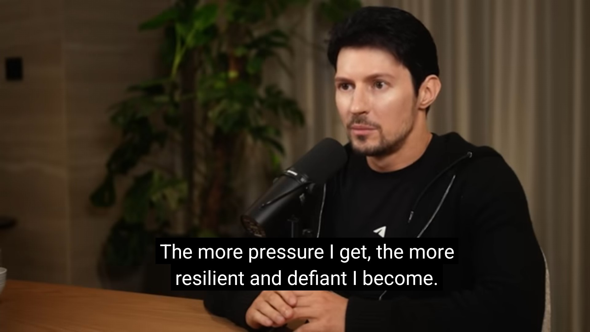

lex fridman - pavel durov
https://youtu.be/qjPH9njnaVU
deno - A modern runtime for JavaScript and TypeScript
https://deno.com/
https://github.com/denoland/deno
gogoanime - animes archive
https://gogoanime.st
Effective context engineering for AI agents - anthropic blog
https://www.anthropic.com/engineering/effective-context-engineering-for-ai-agents
let's assume it's totally fine if i do nothing and achieve nothing. just to lie down and close my eyes, just listen to my music and feel the wind on my face. let's assume it's fine to be nobody, to be nohting special and just like the norm. let's imagine how life will feel in that world.
now let's assume i'm going to work my ass off every second for a specific goal, e.g. becoming a supergreat programmer or founder or athlete or ... . or let's assume we are going to divide that time and energy between 2 or 3 things, e.g. to become an athlete programmer or a linguist writer dad or ... . let's imagine how life will feel in that world.
now let's come back to real life. we have to choose one of these imaginary worlds to pursue - or some combination in the middle. and by choosing any of them, we are sacrificing all the other ones. that's the cost. they all might be nice options or might be shitty ones, each with its own trade offs. but at the end of the day, one must be chosen deliberately. otherwise universe will choose that for us.
how my life will look like if i spend 1000 hours for one of them? how about 10,000 hours? how about 100,000 hours? how about if i spend none?
test